Занятие 12. JavaScript. Библиотека JQuery. Текстовый редактор
Задача урока: познакомиться с
возможностями библиотеки JQuery, выполнить настройку JS-кода текстового редактора.
На занятии мы
узнаем:
1.
Как работают методы на JQuery.
2.
Как работает объект document.
3.
Как привязать текстовый
редактор.
В главном каталоге с названием «SOCIALSITE» создаем документ «testJS.php», который
будем использовать в дальнейшем для знакомства с JavaScript. Сам язык имеет
достаточно большой спектр возможностей – от простых
реакций на нажатие кнопки, до интеграции видео или иных задач, которые требуется
решить разработчику. Они ограничены лишь выдумкой автора и техническими
необходимостями в конкретном проекте (рис. 12.1).
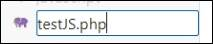
Рис. 12.1. Создание файла
Для работы в этой главе мы будем
использовать библиотеку JQuery,
которая имеет множество встроенных анимаций и функций. Их удобно использовать в
коде, они сокращают время разработки проекта (рис. 12.2).
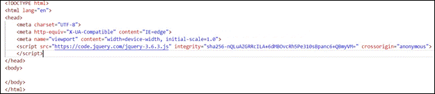
Рис. 12.2. Подключение библиотеки
Произведем базовую настройку документа по примеру
изображения выше. Первым делом стоит объявить тип документа как «html», чтобы дать
обработчику понять наши намерения. Выставляем кодировку стандарта «UTF-8» для
корректного отображения символов, делаем настройку адаптивного изображения
ширины. Подключим наш скрипт, связывающий код и JQuery в единое целое,
подготовленный заранее.
Займемся теперь непосредственным написанием скрипта, чтобы
разобраться с этим на живом примере. Создадим ссылку с имением «downlist»
и отображаемым именем «открыть/закрыть», которая будет в дальнейшем отвечать за
открытие и закрытие списка при нажатии на нее. Сразу же подготовим несколько
абзацев, что должны будут «выплывать» при успешной отработке функции. Однако,
если попробуем запустить код сейчас и нажмем на кнопку, ничего не произойдет.
Для этого необходим JavaScript.
Создадим метод <script>, указав его тип как «type/javascript».
Объявляем создание функции посредством указания $ перед началом. Ссылаясь на
ранее созданную ссылку, применим по отношению к ней метод «click», чтобы
отследить взаимодействие с пользователем. В случае нажатия раскрываем
содержимое блоков плавной анимацией появления текста (рис. 12.3).
|
|
Метод «click()» – это метод, с помощью
которого можно совершить клик по элементу. Метод «slideToggle()» - отображает или скрывает
выбранные элементы, анимируя их высоту таким образом, что если элемент
первоначально отображается, он будет перемещаться вверх, если он скрыт, он
будет скользить вниз, т. е. переключаться между методами slideUp() и
slideDown(). |
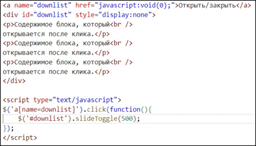
Рис. 12.3. Написание кода
Попробуем понять, как это работает на практике. Перейдем по
пути localhost/SocialSite/testJS.php и попробуем
нажать на нашу ссылку. Как мы видим, всё работает как надо. Текст плавно
появился в виде выпавшего списка, наш скрипт с методом «клик» работает (рис.
12.4).
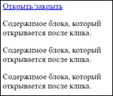
Рис. 12.4. Отображение списка
Перейдем по пути «socialsite/posts/create.php». Подключаем
модуль редактора к тексту «CKEditor» посредством скопированного кода с
сайта модуля. Также сразу свяжем наш документ с файлом script.js, указывая его
как источник наших скриптов (рис. 12.5 – 12.6).
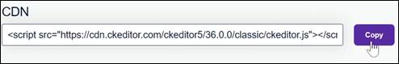
Рис. 12.5. Копирование скрипта с сайта
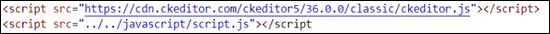
Рис. 12.6. Вставка скрипта в код
В классе «row
add-post» находим метод
«textarea»,
изменяя его ID
на «editor»
(рис. 12.7).
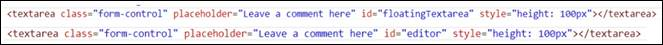
Рис.
12.7. Добавление текстовых полей
Теперь перейдем в «socialsite/javascript/script.js». Вставляем
код из примера с сайта CKEditor
5.(
https://ckeditor.com/docs/ckeditor5/latest/installation/getting-started/configuration.html)
(рис. 12.8 – 12.9).
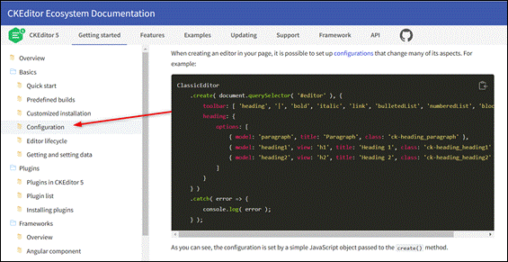
Рис.
12.8. Пример с сайта
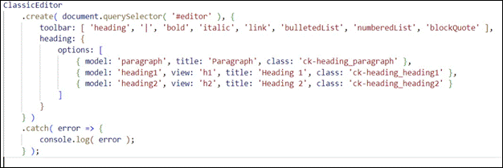
Рис.
12.9. Код с сайта
Переходим на локальный сайт и убеждаемся в корректной работе
всего функционала: изменение размера, установка жирного или курсивного шрифта,
иные методы редактирования текста (рис. 12.10).
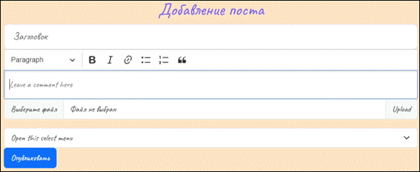
Рис. 12.10. Подключение CKEditor
и файла script.js
Продолжим настройку
административной панели нашего сайта. Для начала перейдем по пути «socialsite/admin/application/include» и откроем файл headerAdmin.php. Проверяем наличие возможности
покинуть панель посредством нажатия на «домой» или «покинуть конструкт».
Заметив
нужные элементы в коде, смещаемся в header.php. Заменяем заглушку на полноценный
функциональный код.
|
#Старый
код. <li><a href="#">Панель конструкта</a></li> #Новый код <li><a href="<?php echo BASE_URL .
‘admin/posts/index.php’?>">Панель конструкта</a></li> |
Находясь внутри каталога include, создадим файл sidebarAdmin.php.
Находим в «socialsite/admin/posts/create.php» класс container, сразу же под ним видим класс row. Копируем его содержимое – как и
содержимое sidebar col-4. Вставляем в недавно созданный файл,
изменяя значение на sidebar
col-2. Поскольку на данный момент
ссылки внутри тега <a>
никуда не ведут, не нужно беспокоиться о функционале самих кнопок (рис.
12.11).
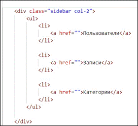
Рис.
12.11. Код create.php после изменений
Проходим
по всем файлам типа create.php и index.php каталога admin, удаляя из каждого отдельного
документа sidebar. Не
забываем также удалить зависимые row-классы
и лишние <div>.
Вместе с этим подключаем зависимость с sidebarAdmin.php во всех открытых документах (рис.
12.12 – 12.13).
Рис. 12.12. Добавляемая строка кода для подключения sidebarAdmin.php
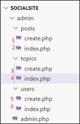
Рис.
12.13. Индексация файлов
Убеждаемся,
что всё работает (рис. 12.14).
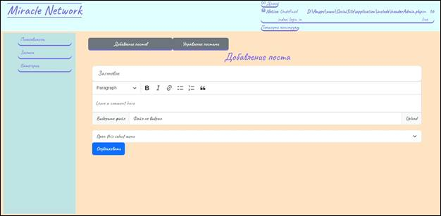
Рис. 12.14. Боковая панель
На этом двенадцатое занятие
окончено!
В рамках этого занятия мы познакомились с
библиотекой JQuery, а также выполнили настройку текстового редактора на языке JavaScript.
На следующем занятии мы доработаем административную панель, подготовим редактирование
категорий и их удаление.
После прохождения каждого занятия рекомендуем повторить все термины, которые
были изучены, а также закрепить пройденный материал, ответив на контрольные
вопросы.
|
Это нужно запомнить |
|
|
|
Метод «click()» – это метод, с помощью
которого можно совершить клик по элементу. Метод «slideToggle()» - отображает или скрывает
выбранные элементы, анимируя их высоту таким образом, что если элемент
первоначально отображается, он будет перемещаться вверх, если он скрыт, он
будет скользить вниз, т. е. переключаться между методами slideUp() и
slideDown(). |
1. Что такое JQuery?
2. Как работает метод slideToggle?